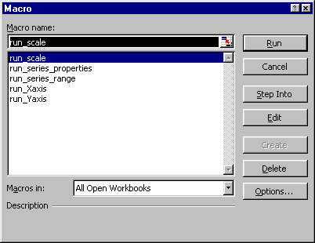
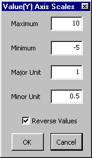
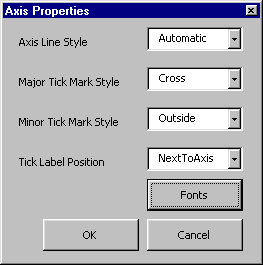
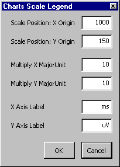

These excel macros are provided with user forms. They should be available in the excel file ERPplot_top70.xls, but otherwise they can be downloaded and installed into a Visual Basic Project, according to the procedure described in Excel Macro Utilities. To facilitate easy use, they can be run from the 'tools - macro - macros (alt-F8)' menu:
When in the macro dialog box (as below), select and run any of the "run_xxx" macros. These macros prompt for relevant input and, given the OK command, proceed to modify all chart objects embedded in the active sheet. The macro names indicate what they do:
|
|

The "run_Yaxis" macro presents the "Value(Y) Axis Scales" form. Specify the maximum and minimum values, the major and minor tick mark units and the orientation of the values (reverse is negative up, the ERP convention). Given the OK command, all charts are modified, indicated by an information message, and the "Axis Properties" form appears. Defines whether or not the axis is drawn and how it appears (fields here are the same as those in the standard excel axis dialog box). Again, given the OK command, all charts are modified and the "Charts Scale Legend" form appears. This defines the attributes of the small scale legend in the top right of the plot figure in ERPplot_top70.xls (on my screen that's at Xorigin = 1000, Yorigin = 150). The "Multiply ..." fields determine the length of the x/y axis in the legend, as a multiple of the major unit length. At present, this last macro requires that sheet 1 contains the time points of the waveforms in column 126, so that it can automatically determine the beginning and ending time of the epoch for the waveforms displayed. This last macro first ensures that all chart plots are equal size, including the chart titles, and then automatically determines the correct size of the scale legend. If the cancel button is pressed, only that stage of the macro is aborted, the next stage will be available.
  
The .xls file(s) and associated macros/forms are provided with no implied or express warranties. Please use them and distribute them as you will, entirely at your own risk (please abide by the GPL if you redistribute these utilities, see http:/www.gnu.org). These tools been developed and tested on limited dataset specifications, please be careful to verify operations on your data. Some of the tools are available now, but still under development. If you have any advice, please send email to Darren.Weber@flinders.edu.au ;-)